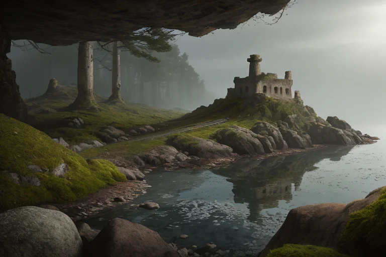
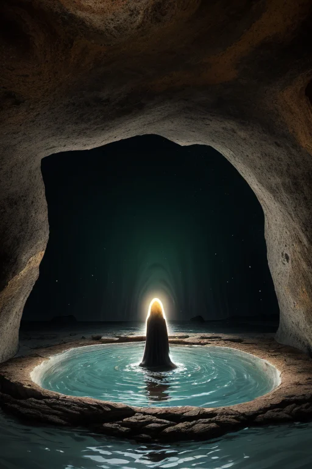
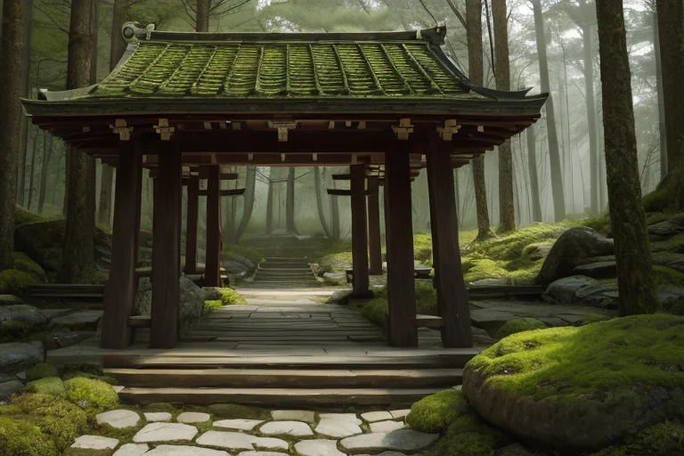
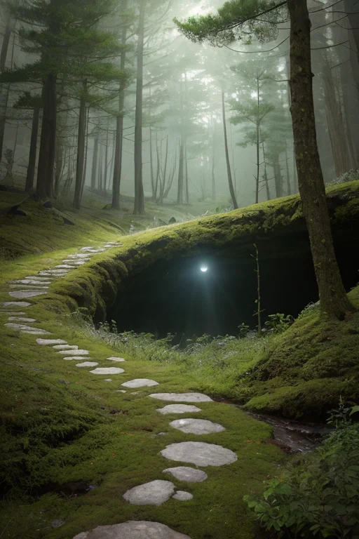
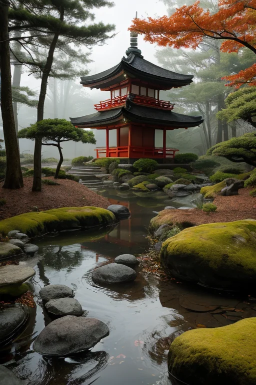

第一章 現実の福井
あなたはまだ気づいていない。この土地にも、王がいることを。
永平寺の深い杉木立は、時間の流れそのものを濾過する。修行僧の足音、読経の声、それらすべてが、この地に積もった無数の「層」の一部として沈殿していく。一乗谷朝倉氏遺跡の石垣は、苔に覆われ、戦国の喧騒を完全に地中へと封じ込めた。そして東尋坊の荒波は、絶えず崖を削り、新たな地層の断面を晒す。この土地は、あらゆるものを「古層」として抱え込み、封じ込めてきた。
その静謐には、不穏な密度がある。三方五湖の水面は鏡のように穏やかだが、その底には、淡水と海水が混じり合わないまま幾層にも重なる不思議な水脈が眠る。まるで、過去のすべての事象が、消化も解消もされず、ただ静かに圧縮され、地層の記憶として封じられているようだ。
古さは、この地では停滞ではない。膨大な圧力のもとで固化した、強固な土台そのものだ。しかし、土台が揺らぐ時、そこに封じられたものは、再び目を覚ますかもしれない。

第二章 歪みの兆候
永平寺の深い杉木立の静寂は、微かな違和感によって乱され始めていた。修行僧たちの足音は変わらず、読経の声も途切れない。しかし、層王フクイア・ストラタには聞こえる。地中を伝わる、かすかな軋み。それは、この地に幾重にも張り巡らされた「封印線」の、ほころびの音だった。
「地層の記憶が、活性化しています」
主席妖精ストラリスが、無表情に報告する。その手には、東尋坊の荒波が削り取った地層の断片が握られていた。本来、安定的に重なるはずの層が、内部で微細なずれを起こしている。
「一乗谷朝倉氏遺跡の地下でも、同様の振動を確認。人間の計器には感知されないレベルですが」
古さは土台である。フクイアはその信念を揺るがさない。だが、土台そのものが、長い眠りから覚めようとしている。恐竜博物館に収められた化石たちが、太古の咆哮を思い出そうとするように。それは破壊ではなく、ただ「在ること」の再確認なのか。それとも、封じられた時間の解放なのか。
フクイアは、三方五湖を静かに見下ろした。鏡のような水面の下で、混じり合わぬ水脈が、かすかに渦を巻き始めていた。

第三章 王の葛藤
永平寺の深い森の静寂は、地層の底から湧き上がる微かな振動によって、かすかに乱されていた。フクイアは座禅堂の縁に立ち、目を閉じる。足下を通る地脈のうねりを、皮膚で感じ取る。それは怒りではない。太古の地層が、ただ深く呼吸をし直そうとする、巨大なため息のようだ。
「解放の圧力、0.3パーセント上昇です」
ストラリスの声は、いつにも増して硬い。地盤安定の妖精にとって、この「覚醒」は秩序への挑戦でしかない。
「封じ続けることが、この土地の安定です」
しかし、ジュラミアが保存する記憶は、別の声を囁く。一乗谷朝倉氏遺跡の石垣に刻まれた時間。東尋坊の荒波に削られた岩肌の記憶。それらは全て、変化の連続の上に成り立つ「古さ」だった。完全な静止は、むしろ死に近い。
フクイアは拳を握りしめた。保守こそが使命だ。だが、使命とは何か。土台を守ることか。それとも、土台そのものが次の段階へと移行するのを、恐れて封じることか。
彼は目を開け、永平寺の庭を見た。そこには、何百年もかけて形作られた「自然」の静謐があった。その美しさは、完璧な静止ではなく、許容された微かな変化の積み重ねの果てにあった。
古さは土台か。それとも、自らを更新するための、長い長い助走なのか。

第四章 妖精との対話
永平寺の裏山、人知れず続く細道の先に、ジュラミアはいた。彼女の傍らには、無数の地層の薄片が、微かな光を放って浮かんでいた。それは、この土地が記憶する全ての時間の断片だった。
「王よ、あなたは『封じる』ことを使命と考えていますね」
ジュラミアの声は、地中を伝わる微振動のようだった。
「しかし、私たちが守ってきたものは、単なる『過去』ではありません。これは『蓄積』です。一乗谷の戦火も、三方五湖の形成も、恐竜が跋扈した時代の熱も、全てが層を成し、今の安定を支えている」
フクイアは、一枚の薄片に手を伸ばした。そこには、遙か昔の巨大地震の痕跡が、黒い帯となって刻まれていた。
「この歪みも、蓄積なのか」
「そうです。封じるべきは、破壊そのものではなく、『蓄積』が一気に噴出する『乱流』です。私たちは、その噴出を、ゆっくりと、土地が耐えられる速度で解放している。それが『調整』です」
古さとは、動かない岩盤ではない。膨大な時間をかけて圧縮され、沈殿した「可能性」の層そのものなのだと、妖精は語った。

第五章 微調整と余韻
歪みの帯を前に、フクイア・ストラタは永平寺の庭で学んだ「只管打坐」の如く、意識を地層の深部へと沈めた。彼の役割は、この古い歪みの帯が、今この瞬間に一気に解放されることを防ぐことだ。妖精ストラリスとジュラミアが地中に張り巡らせた微細なネットワークを通じて、巨大なエネルギーを、三方五湖の水脈や、東尋坊の岩盤の微小な亀裂へと、無数に分流させていく。それは、大地の鼓動を一瞬遅らせ、振動を一段階小さくする、ほとんど感知できない調整である。
代償は、彼自身の「静観」の質が変わっていくことだった。感情を持たぬはずの王の内側に、この土地の「蓄積」が滲み始めていた。朝倉氏が夢見た栄華の余韻、永平寺の厳しい禅の時間、恐竜が跋扈した時代の熱気――それらが混ざり合い、一種の郷愁のような、重い感情として沈殿しつつあった。
古さは土台か。彼は今、その問いに答える必要はない。土台は時に重く、時に脆い。彼の役目は、その重さが崩壊ではなく持続へと向かうよう、今日も、微かに手を添えることだけだ。
あなたの町にも、王がいる。